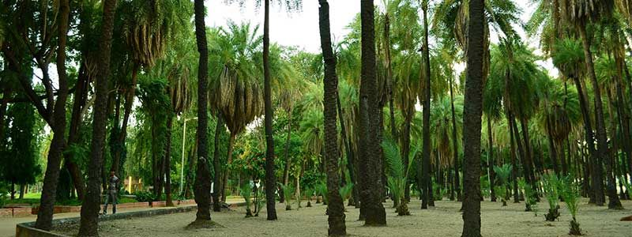
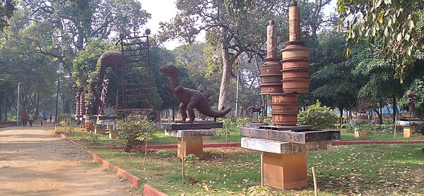

INDIRA PARK

Indira Park is a public greenspace and park in the heart of Hyderabad, India. The foundation stone for the Indira Park was laid during September 1975 by Late Faqruddin Ahmed, the then president of India and it was open for the people in the year 1978 with complete landscaping.
Indira Park is having 76 acres (31 ha) of area.[1] The park is managed by the Hyderabad Metropolitan Development Authority. It is located in Domalguda, a residential locality which lies along the Hussain Sagar lake. The park contains an award-winning rock garden.
Because of its large size and the presence of a large lake in the midst of an urban area, Indira Park is an urban oasis.
Indira Park is a public greenspace and park in the heart of Hyderabad, India. The foundation stone for the Indira Park was laid during September 1975 by Late Faqruddin Ahmed, the then president of India and it was open for the people in the year 1978 with complete landscaping.
Indira Park is having 76 acres (31 ha) of area.[1] The park is managed by the Hyderabad Metropolitan Development Authority. It is located in Domalguda, a residential locality which lies along the Hussain Sagar lake. The park contains an award-winning rock garden.
Because of its large size and the presence of a large lake in the midst of an urban area, Indira Park is an urban oasis.

How to reach:

By Air
The nearest airport is in hyderabad

By Train
The nearest railways is in hyderabad

By Road
indira park, the most famous tourist destination in Hyderabad, can be used as a landmark. A bus,cab,local rickshaw can also be taken to reach the capital.